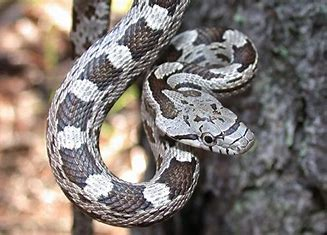
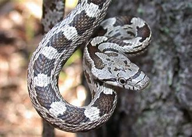
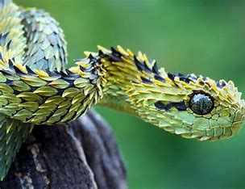
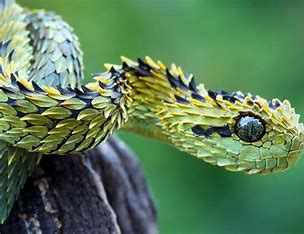

Snake, (suborder Serpentes), any of more than 3,400 species of reptiles distinguished by their limbless condition and greatly elongated body and tail. Classified with lizards in the order Squamata, snakes represent a lizard that, over the course of evolution, has undergone structural reduction, simplification, and loss as well as specialization. All snakes lack external limbs, but not all legless reptiles are snakes. Certain burrowing lizards may have only front or hind limbs or be completely legless. Unlike lizards, snakes lack movable eyelids, which results in a continuous and often disconcerting stare. Snakes also lack external ear openings. Internally, they have lost the urinary bladder. The visceral organs are elongated, with reduction of the left member in relation to the right; the left lung is greatly reduced or even lost entirely. However, snakes possess increased numbers of vertebrae and have developed two novelties among vertebrates: a tracheal lung in the neck region and a venom-conducting system for subduing prey.Snakes can control the amount of venom they inject and may bite aggressively for food or defensively for protection. Snakes have a limited amount of venom available at any given time and do not want to waste it on nonprey organisms. As a result, about 40 percent of bites suffered by humans are defensive in nature and “dry” (without envenomation). Statistics show that the vast majority of snakebites occur while either catching and handling captive snakes or trying to molest or kill wild ones. In either case, the snake is only defending itself. Rattlesnakes, for example, are venomous, and large ones are quite dangerous owing to the amount of venom they can inject. However, most are shy and retreating, and none will attack a person unmolested. When approached or molested, they will coil up and rattle as a warning to be left alone, striking only as a last resort. Most cases of reputed snake attack are based upon encroachment by a person into the snake’s territory, which makes it feel trapped or cornered, or provocation of a snake during the breeding season. Even in these scenarios, only two snakes have a reputation as dangerous aggressors: the black mamba (Dendroaspis polylepis) of Africa and the king cobra (Ophiophagus hannah) of Southeast Asia. Nevertheless, snakes are inoffensive under the vast majority of circumstances. People are rarely indifferent about them, generally exhibiting emotions that range from religious awe and superstitious dread to repulsion and uncontrollable fear. It is interesting to note that, although most people profess to fear or hate snakes, one of the most visited areas of any zoo is the snake house—proof that snakes are mysterious and fascinating, even if they are loathed. Given their exquisite colours, patterns, and graceful movements as they crawl, swim, or climb, some snakes can be considered among the most beautiful animals.
 
 
